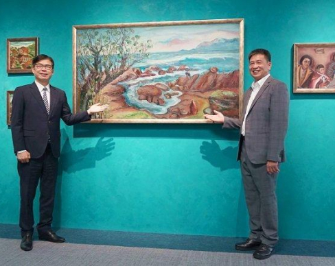
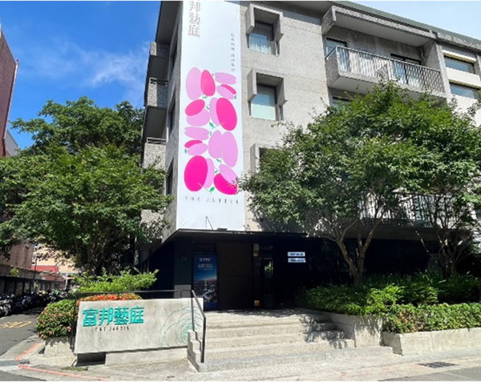

應用服務案例
場域服務案例 在各類型空間使用FindARTs 展牆方案可達到多種藝術氛圍
商務/展示空間
商務展示空間


商務展示空間

商務展示空間

FindARTs Gallery x 富邦藝庭 打造建設美學體驗
FindARTs Gallery與富邦藝庭、藝高文創及策展人合作，於大安區巷弄裡，給您難以想像絕佳藝術體驗想像，未來一年將不定期推出系列特展與數位藝術精品，讓商業空間、空間場域、藝術鑑賞者等擁有全新體驗，歡迎預約參觀，期待與您相見!
閱讀更多博物館/美術館
博物館


私人美術館


美術館


美術館


FindARTs 美術館合作策展 - 春源畫室：畫師—詩人—劇作家—承繼者
臺南作為首屈一指的宮廟之都，除了信仰本身所擴展出的文化傳承與庶民品味之外，獨具地方特色的美感體驗成為地方追求認同享受生活雅興途徑。致力建構臺灣藝術史的南美館推出年度大展「春源畫室」，展出臺南重要廟宇繪師潘家—潘春源（1891-1972）、潘麗水（1914-1995）、潘瀛洲（1916- 2004）及潘岳雄（1943-）等三代以來橫跨115年的創作風華，其中展間以FindARTs 75吋策展服務方案，協助展出潘春源入選第三屆台展重要作品《牛車》，據悉在台展入選畫作今大都散落流失或有流傳受火災損毀等，《牛車》為潘春源目前唯一仍存在的畫，將原畫呈現展現時空背景下地方景色文化資產。
閱讀更多
美術館